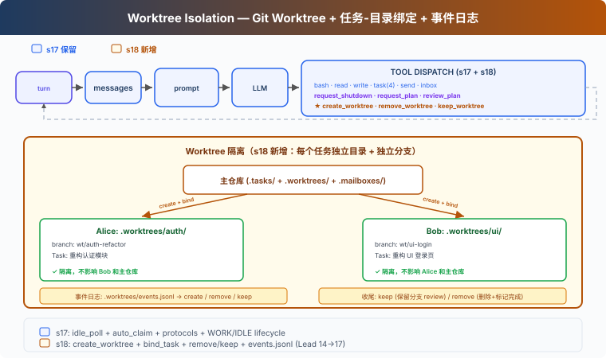

s18: Worktree Isolation — 各干各的，互不干扰
"各干各的目录, 互不干扰" — 任务管目标, worktree 管目录, 按 ID 绑定。 Harness 层: 隔离 — 并行执行的目录隔离。
On this page
s01 → ... → s16 → s17 → s18 → s19 → s20
"各干各的目录, 互不干扰" — 任务管目标, worktree 管目录, 按 ID 绑定。
Harness 层: 隔离 — 并行执行的目录隔离。
问题
s17 中，Alice 和 Bob 都在同一个目录下工作。Alice 的任务是"重构认证模块"，Bob 的任务是"重构 UI 登录页"。
Alice write_file("config.py", ...)。Bob 也 write_file("config.py", ...)。两个人改同一个文件，互相覆盖。而且无法干净地回滚——分不清哪些改动是谁的。
s15-s17 解决了"谁干什么"（任务系统）和"怎么通信"（消息总线），但没解决"在哪干"。
解决方案

Git worktree 让你在同一仓库中创建多个独立的工作目录，每个有自己的分支。Alice 在 .worktrees/auth-refactor/ 下工作，Bob 在 .worktrees/ui-login/ 下工作——互不干扰。
沿用 S17 的教学版 MessageBus、协议和自治认领机制。本章新增：
| 能力 | 作用 |
|---|---|
| create_worktree | 为任务创建独立目录 + 独立分支 |
| bind_task_to_worktree | 把任务和工作目录绑定（不改状态） |
| remove_worktree / keep_worktree | 完成后清理或保留 |
| validate_worktree_name | 拒绝路径穿越和非法字符 |
工作原理
创建：任务-Worktree 绑定
def create_worktree(name: str, task_id: str = "") -> str:
validate_worktree_name(name) # 只允许 [A-Za-z0-9._-]{1,64}
path = WORKTREES_DIR / name
ok, result = run_git(["worktree", "add", str(path), "-b", f"wt/{name}", "HEAD"])
if not ok:
return f"Git error: {result}"
if task_id:
bind_task_to_worktree(task_id, name)
log_event("create", name, task_id)
return f"Worktree '{name}' created at {path}"
def bind_task_to_worktree(task_id: str, worktree_name: str):
task = load_task(task_id)
task.worktree = worktree_name # 只写 worktree 字段
save_task(task) # 状态保持 pending，等队友 claim
绑定规则：一个任务绑定一个 worktree。绑定不改任务状态——任务仍是 pending，队友自动认领时才推进到 in_progress。这样 Lead 可以提前创建任务和 worktree，队友 idle 时自然认领带 worktree 的任务。
队友工具的 cwd 切换
教学版给每个队友维护一个 wt_ctx 字典，记录当前 worktree 路径。队友认领带 worktree 的任务时，wt_ctx 自动设置为 worktree 路径；队友的 bash、read_file、write_file 在 worktree 目录下执行：
# 队友线程内部
wt_ctx = {"path": None}
def _run_claim_task(task_id):
result = claim_task(task_id, owner=name)
if "Claimed" in result:
task = load_task(task_id)
if task.worktree:
wt_ctx["path"] = str(WORKTREES_DIR / task.worktree)
return result
def _run_bash(command):
return run_bash(command, cwd=wt_ctx["path"]) # 在 worktree 下执行
这是教学简化。真实 CC 的 EnterWorktree 用 process.chdir() 切换整个进程目录，AgentTool isolation 用 cwdOverride 包住子 agent 执行。
收尾：Keep 还是 Remove
任务完成后，两个选择：
def remove_worktree(name: str, discard_changes: bool = False) -> str:
# 安全检查：有改动时默认拒绝
if not discard_changes:
files, commits = _count_worktree_changes(path)
if files > 0 or commits > 0:
return "有未提交改动，使用 discard_changes=true 强制删除，或 keep_worktree 保留"
ok, _ = run_git(["worktree", "remove", str(path), "--force"])
if not ok:
return "删除失败"
run_git(["branch", "-D", f"wt/{name}"])
log_event("remove", name)
def keep_worktree(name: str) -> str:
log_event("keep", name)
return f"Worktree '{name}' kept for review (branch: wt/{name})"
Keep = 留着分支，等人工 review 后合并到主分支。Remove = 有改动时默认拒绝，需要 discard_changes=true 确认。不自动 complete task——任务完成由队友的 complete_task 显式触发。
事件流：可审计
每次生命周期操作写入日志，方便排查：
def log_event(event_type: str, worktree_name: str, task_id: str = ""):
event = {"type": event_type, "worktree": worktree_name,
"task_id": task_id, "ts": time.time()}
# append to .worktrees/events.jsonl
事件类型：create（创建）、remove（删除）、keep（保留）。教学版只记录事件用于人工排查；完整恢复还需要 index 或 git worktree list 扫描。
run_git：返回成功/失败
def run_git(args: list[str]) -> tuple[bool, str]:
r = subprocess.run(["git"] + args, cwd=WORKDIR, ...)
return r.returncode == 0, output
create_worktree 和 remove_worktree 只在 git 命令成功后才写事件日志，保证日志反映真实状态。
相对 s17 的变更
| 组件 | 之前 (s17) | 之后 (s18) |
|---|---|---|
| 工作目录 | 所有 Agent 共享 WORKDIR | 每个任务可绑定独立 git worktree |
| Task 数据 | id/subject/status/owner/blockedBy | + worktree 字段 |
| 队友工具 cwd | 始终 WORKDIR | 认领带 worktree 的任务时自动切换 |
| 新函数 | — | create_worktree, bind_task_to_worktree, remove_worktree, keep_worktree, validate_worktree_name |
| worktree 安全 | 无 | name 校验 + 有改动时拒绝删除 |
| 事件日志 | 无 | events.jsonl 生命周期审计 |
| Lead 工具 | 14 (s17) | + create_worktree, remove_worktree, keep_worktree (17) |
| 队友工具 | 8 (s17) | 8（bash/read/write 在 worktree cwd 执行） |
试一下
cd learn-claude-code
python s18_worktree_isolation/code.py
试试这个 prompt：
Create two tasks, then create worktrees for each (bind with task_id). Spawn alice and bob. Watch them auto-claim and work in isolated directories.
观察重点：两个 worktree 的 git status 输出是否显示不同的分支？队友认领带 worktree 的任务后，bash 命令是否在 worktree 目录下执行？remove_worktree 对有改动的 worktree 是否拒绝？.tasks/ 中的任务在绑定后状态是否仍为 pending？
接下来
Agent 团队能在隔离的工作空间中自组织了。但 Agent 的能力受限于我们给它写的工具——bash、read、write、task...
如果用户已经有了自己的工具怎么办？比如一个公司内部的 Jira API、一个自建的部署系统？
s19 MCP Plugin → 给 Agent 装一个插件系统。外部工具通过标准协议接入，Agent 不需要知道它们是谁写的。